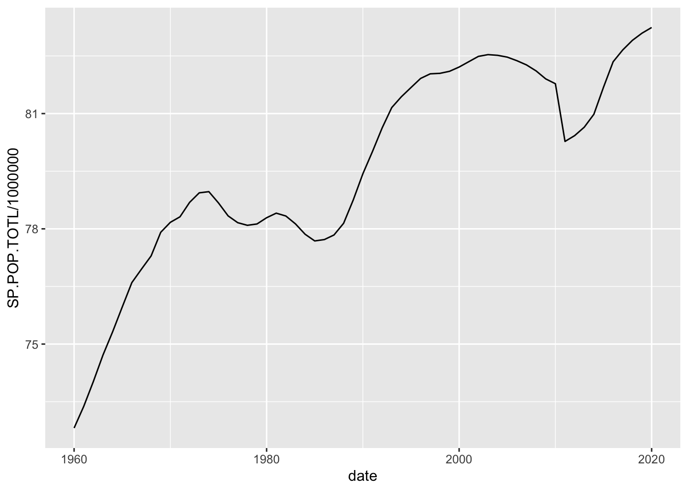
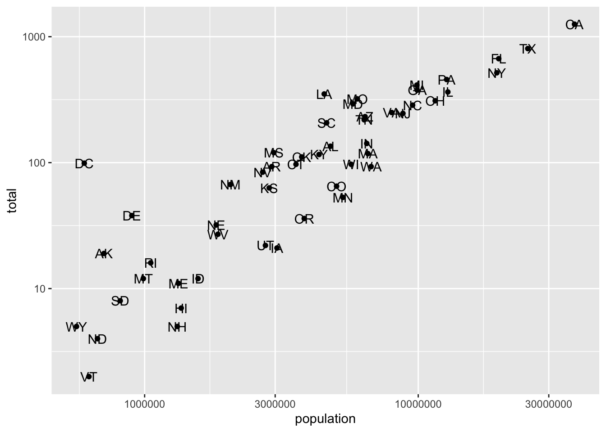
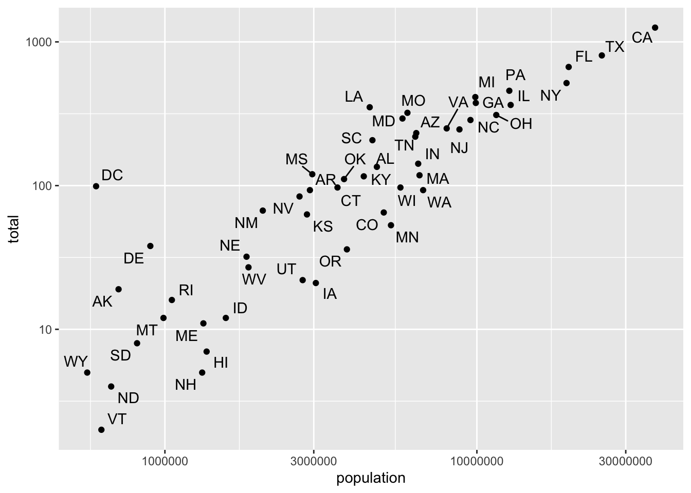
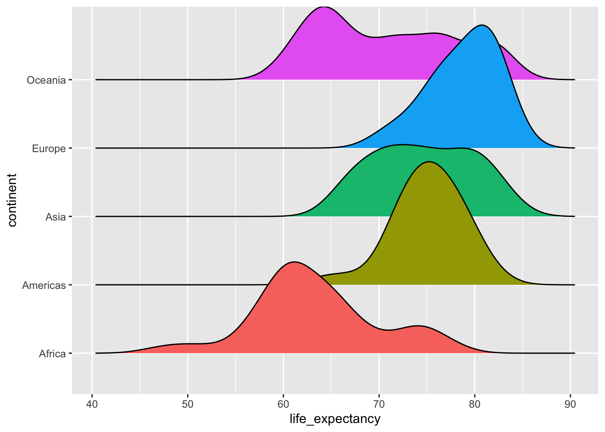
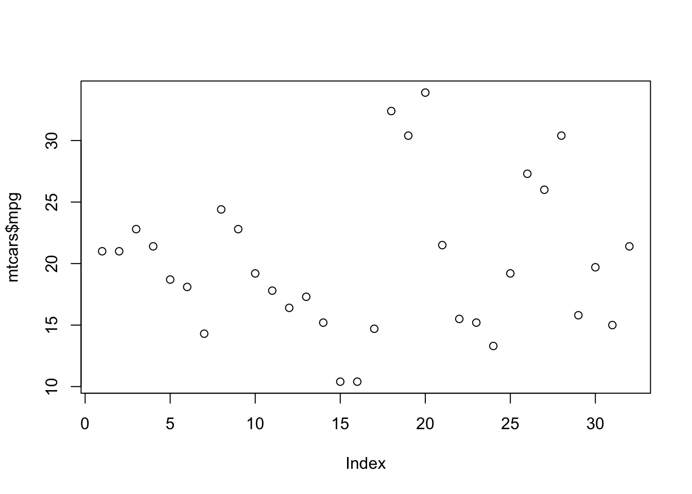
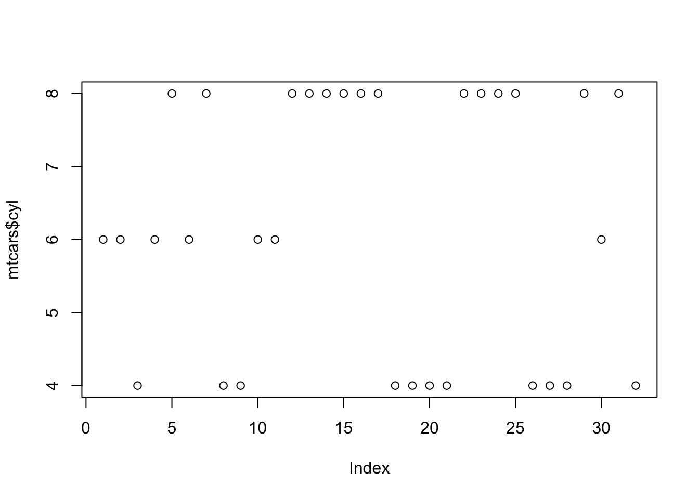

4 Packages
4.1 Functionality
4.1.1 kableExtra
The goal of kableExtra is to help you build common complex tables and manipulate table styles. Plots nice tables, basically. It imports the pipe %>% symbol from magrittr and verbalize all the functions, so basically you can add “layers” to a kable output in a way that is similar with ggplot2 and plotly.
4.1.2 gridExtra
: Used to arrange plots next to each other.
4.1.3 kableExtra
: The goal of kableExtra is to help you build common complex tables and manipulate table styles. Plots nice tables, basically. It imports the pipe %>% symbol from magrittr and verbalize all the functions, so basically you can add “layers” to a kable output in a way that is similar with ggplot2 and plotly.
4.1.4 unpivotr
Tools for converting data from complex or irregular layouts to a columnar structure. For example, tables with multilevel column or row headers, or spreadsheets.
4.1.5 tibble
tible provides a ‘tbl\_df’ class (the ‘tibble’) that provides stricter checking and better formatting than the traditional data frame.
4.1.6 dslabs
26 Datasets and some functions for data analysis. Used to practice data visualization, statistical inference, modeling, linear regression, data wrangling and machine learning.
4.1.7 knitr
Engine for dynamic report generation with R. Enables integration of R code into LaTeX, LyX, HTML, Markdown, AsciiDoc, and reStructuredText documents. The purpose of knitr is to allow reproducible research in R through the means of Literate Programming.
4.1.8 readr
The goal of ‘readr’ is to provide a fast and friendly way to read rectangular data (like ‘csv,’ ‘tsv,’ and ‘fwf’)
4.1.9 readxl
The readxl package makes it easy to get data out of Excel and into R.
4.1.10 tidyxl
Imports non-tabular data from Excel files into R. It exposes cell content, position, formatting and comments in a tidy structure for further manipulation, especially by the unpivotr package.
4.1.11 corrgram
Create correlograms from data frames directly.
4.1.12 corrplot
Create correlograms from preprocessed data frames. Needs a matrix with correlations between each variable.
4.1.13 rtweet
Collect and organize Twitter data.
4.1.14 caTools
Contains several basic utility functions including: moving (rolling, running) window statistic functions, read/write for GIF and ENVI binary files, fast calculation of AUC, LogitBoost classifier, base64 encoder/decoder, round-off-error-free sum and cumsum, etc.
4.2 Data
4.2.1 ggplot2movies
IMDB movies data set useful to experiment with ggplot2 visualizations.
4.2.2 WDI
Search and download data from over 40 databases hosted by the World Bank, including the World Development Indicators (‘WDI’), International Debt Statistics, Doing Business, Human Capital Index, and Sub-national Poverty indicators, GDP, Population.
4.2.3 essurvey
Package used to easily download specific European Social Survey data.
4.2.4 wbstats
This package allows to download data from the world bank database.
library(wbstats)
wb_cachelist$indicators## # A tibble: 16,649 × 8
## indicator_id indicator unit indicator_desc source_org topics source_id
## <chr> <chr> <lgl> <chr> <chr> <list> <dbl>
## 1 1.0.HCount.1… Poverty H… NA The poverty hea… LAC Equity … <df [… 37
## 2 1.0.HCount.2… Poverty H… NA The poverty hea… LAC Equity … <df [… 37
## 3 1.0.HCount.M… Middle Cl… NA The poverty hea… LAC Equity … <df [… 37
## 4 1.0.HCount.O… Official … NA The poverty hea… LAC Equity … <df [… 37
## 5 1.0.HCount.P… Poverty H… NA The poverty hea… LAC Equity … <df [… 37
## 6 1.0.HCount.V… Vulnerabl… NA The poverty hea… LAC Equity … <df [… 37
## 7 1.0.PGap.1.9… Poverty G… NA The poverty gap… LAC Equity … <df [… 37
## 8 1.0.PGap.2.5… Poverty G… NA The poverty gap… LAC Equity … <df [… 37
## 9 1.0.PGap.Poo… Poverty G… NA The poverty gap… LAC Equity … <df [… 37
## 10 1.0.PSev.1.9… Poverty S… NA The poverty sev… LAC Equity … <df [… 37
## # … with 16,639 more rows, and 1 more variable: source <chr>wb_cachelist$topics## # A tibble: 21 × 3
## topic_id topic topic_desc
## <dbl> <chr> <chr>
## 1 1 Agriculture & Rural Development "For the 70 percent of the world's …
## 2 2 Aid Effectiveness "Aid effectiveness is the impact th…
## 3 3 Economy & Growth "Economic growth is central to econ…
## 4 4 Education "Education is one of the most power…
## 5 5 Energy & Mining "The world economy needs ever-incre…
## 6 6 Environment "Natural and man-made environmental…
## 7 7 Financial Sector "An economy's financial markets are…
## 8 8 Health "Improving health is central to the…
## 9 9 Infrastructure "Infrastructure helps determine the…
## 10 10 Social Protection & Labor "The supply of labor available in a…
## # … with 11 more rows# result = wb_search("")
# result$indicator_desc
# Takes a long time to download
data = wb_data("SP.POP.TOTL", start_date = 1960, end_date = 2020)
head(data)## # A tibble: 6 × 9
## iso2c iso3c country date SP.POP.TOTL unit obs_status footnote last_updated
## <chr> <chr> <chr> <dbl> <dbl> <chr> <chr> <chr> <date>
## 1 AF AFG Afghanis… 2020 38928341 <NA> <NA> <NA> 2021-12-16
## 2 AF AFG Afghanis… 2019 38041757 <NA> <NA> <NA> 2021-12-16
## 3 AF AFG Afghanis… 2018 37171922 <NA> <NA> <NA> 2021-12-16
## 4 AF AFG Afghanis… 2017 36296111 <NA> <NA> <NA> 2021-12-16
## 5 AF AFG Afghanis… 2016 35383028 <NA> <NA> <NA> 2021-12-16
## 6 AF AFG Afghanis… 2015 34413603 <NA> <NA> <NA> 2021-12-16# Example visualization
data %>%
filter(country == "Germany") %>%
ggplot(aes(date, SP.POP.TOTL/1000000)) +
geom_line()
4.3 Visualization
4.3.1 igraph
Creating and manipulating graphs and analyzing networks. It is written in C and also exists as Python and R packages.
4.3.2 ggthemes
4.3.3 ggrepel
This geometry adds “smart” labels to each data point, meaining labels that “repel” each other automaticaly to not overlap each other. Sometimes the data points are to close to each other. In these cases one solution might be to use a log scale to stretch those clustered observation away from each other.
data(murders)
murders %>%
ggplot(aes(population,total)) +
geom_point() +
scale_x_log10() +
scale_y_log10() +
geom_text(aes(label = abb))
murders %>%
ggplot(aes(population,total)) +
geom_point() +
scale_x_log10() +
scale_y_log10() +
ggrepel::geom_text_repel(aes(label = abb))
4.3.4 ggridges
Density Ridges
In cases in which we are concerned that the boxplot summary is too simplistic, we can show stacked smooth densities or histograms. We refer to these as ridge plots. Because we are used to visualizing densities with values in the x-axis, we stack them vertically. Also, because more space is needed in this approach, it is convenient to overlay them. The package ggridges provides a convenient function for doing this. Here is the income data shown above with boxplots but with a ridge plot.
gapminder %>%
filter(year == 2015) %>%
ggplot(aes(life_expectancy,continent, fill = continent)) +
ggridges::geom_density_ridges(show.legend = F)## Picking joint bandwidth of 2.23
4.3.5 kableExtra
Plots the most simple table.
mtcars[1:10,] %>%
kbl()| mpg | cyl | disp | hp | drat | wt | qsec | vs | am | gear | carb | |
|---|---|---|---|---|---|---|---|---|---|---|---|
| Mazda RX4 | 21.0 | 6 | 160.0 | 110 | 3.90 | 2.620 | 16.46 | 0 | 1 | 4 | 4 |
| Mazda RX4 Wag | 21.0 | 6 | 160.0 | 110 | 3.90 | 2.875 | 17.02 | 0 | 1 | 4 | 4 |
| Datsun 710 | 22.8 | 4 | 108.0 | 93 | 3.85 | 2.320 | 18.61 | 1 | 1 | 4 | 1 |
| Hornet 4 Drive | 21.4 | 6 | 258.0 | 110 | 3.08 | 3.215 | 19.44 | 1 | 0 | 3 | 1 |
| Hornet Sportabout | 18.7 | 8 | 360.0 | 175 | 3.15 | 3.440 | 17.02 | 0 | 0 | 3 | 2 |
| Valiant | 18.1 | 6 | 225.0 | 105 | 2.76 | 3.460 | 20.22 | 1 | 0 | 3 | 1 |
| Duster 360 | 14.3 | 8 | 360.0 | 245 | 3.21 | 3.570 | 15.84 | 0 | 0 | 3 | 4 |
| Merc 240D | 24.4 | 4 | 146.7 | 62 | 3.69 | 3.190 | 20.00 | 1 | 0 | 4 | 2 |
| Merc 230 | 22.8 | 4 | 140.8 | 95 | 3.92 | 3.150 | 22.90 | 1 | 0 | 4 | 2 |
| Merc 280 | 19.2 | 6 | 167.6 | 123 | 3.92 | 3.440 | 18.30 | 1 | 0 | 4 | 4 |
4.3.6 ?gridExtra
https://cran.r-project.org/web/packages/gridExtra/vignettes/arrangeGrob.html
There are often reasons to graph plots next to each other. The gridExtra package permits us to do that with grid.arrange():
library(gridExtra)
p1 <- plot(mtcars$mpg)
p2 <- plot(mtcars$cyl)
# grid.arrange(p1, p2, ncol = 2)